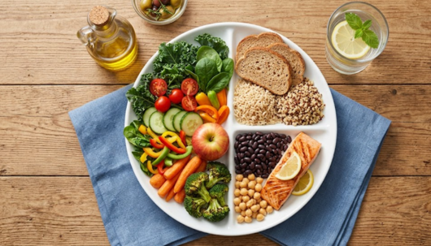

Alimentación Nutritiva
Mantener una dieta equilibrada es el primer paso para prevenir enfermedades y asegurar un buen estado de salud general. A continuación, le presentamos una guía básica de los grupos de alimentos esenciales.
Guía de Grupos de Alimentos
| Grupo de Alimentos | Ejemplos | Beneficio Principal para la Salud |
|---|---|---|
| Proteínas Magras | Pollo, pescado, legumbres, tofu | Reparación y construcción de tejidos musculares |
| Grasas Saludables | Aguacate, aceite de oliva, nueces | Protección cardiovascular y absorción de vitaminas |
| Carbohidratos Complejos | Avena, arroz integral, quinoa | Provisión de energía sostenida a lo largo del día |
| Vitaminas y Minerales | Espinacas, zanahorias, frutos rojos | Fortalecimiento del sistema inmunológico |
El Plato para Comer Saludable interactivo
Descubra las proporciones ideales de una comida sana. Haga clic en cada porción del plato para aprender más.
